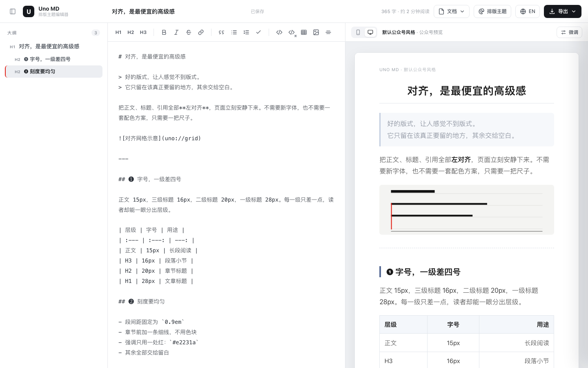

实时双栏预览Live side-by-side preview
边写边渲染，右侧可切手机或网页视图。标题、引用、列表、表格、代码块、任务清单全部所见即所得。Render as you type, with a mobile or web canvas. Headings, quotes, lists, tables, code blocks and checklists all update instantly.
UNOEditor 是一款把「写作」和「成稿」放在一起的 Markdown 排版主题编辑器。左边写稿，右边实时预览；11 套排版主题随手切换，一键复制到公众号，或直接导出 HTML、Markdown、PDF。全部在本机完成，不联网、不上传。UNOEditor puts writing and finished layout side by side. Draft Markdown on the left, see the finished article on the right, switch between 11 typesetting themes, copy straight into WeChat, or export HTML / Markdown / PDF. Everything runs locally — no network, no uploads.

不做笔记库，不搞云同步。把所有力气花在「这一篇怎么排得更好看」上。No note vault, no cloud sync. Every detail serves one goal: making this article look right.
边写边渲染，右侧可切手机或网页视图。标题、引用、列表、表格、代码块、任务清单全部所见即所得。Render as you type, with a mobile or web canvas. Headings, quotes, lists, tables, code blocks and checklists all update instantly.
公众号经典、红黑社论、瑞士网格、莫兰迪、深夜电台……每套都完整定义标题、正文、引用、代码与表格，不是只换一个颜色。WeChat Classic, Editorial Red, Swiss grid, Morandi, Nocturne… each theme defines the whole type system, not just an accent colour.
支持 .json / .css，并自动把 GitHub（.markdown-body）、Typora（#write）、Obsidian（.markdown-preview-view）等根选择器适配到预览容器；样式经清洗和作用域隔离，可随时删除。Accepts .json / .css and rewrites GitHub, Typora and Obsidian root selectors to the preview container. CSS is sanitised, scoped and removable.
字号、行高、强调色三个滑杆即时生效，一键回到主题默认值。适合在发布前把版式调到刚刚好。Font size, line height and accent colour adjust live, with a one-click reset. Dial in the layout right before publishing.
导出时把计算样式递归内联、根节点转为 section 以避开微信的标签过滤，粘贴进编辑器就是最终版式，不用再手动调格式。Computed styles are inlined recursively and the root becomes a section to survive WeChat's filters. Paste and you're done.
复制到公众号、下载样式内嵌的独立 HTML、下载 Markdown 源文件、打印或存为 PDF。导出的 HTML 与预览共用同一份主题 CSS。Rich-text copy, standalone HTML with embedded CSS, raw Markdown, or print / save as PDF — all using the exact CSS you previewed.
自动从 H1–H6 生成大纲并跟随光标高亮，点击即跳到对应行；顶栏下拉可新建、切换、删除文档，本地自动保存。Auto-generated H1–H6 outline follows the caret and jumps to the source line. Create, switch and delete documents from the top bar; saves locally.
零第三方运行时依赖，图标与主题全部内嵌。双击 index.html 就能用，断网、飞行模式照样写稿；文档只存在浏览器本地。No runtime dependencies — icons and theme CSS are inlined. Double-click index.html and it works offline; documents stay in browser storage.
中英界面一键切换；窄屏自动变为编辑 / 预览 / 大纲三个底部标签与抽屉式主题面板。另附 Tauri 2 桌面壳配置。Instant Chinese / English switch; narrow screens get edit / preview / outline tabs and a drawer. A Tauri 2 desktop shell is included.
下面不是截图：这是官网直接加载应用同一份 theme-styles.js，渲染出的真实主题效果。11 套随便点。Not a screenshot. This page loads the app's very own theme-styles.js and renders the real thing. Try all 11.
好的版式，让人感觉不到版式。它只留在该真正要留的地方，其余交给空白。Good typography is invisible. It stays exactly where it matters and leaves everything else to white space.
把正文、标题与引用全部左对齐，页面立刻安静下来。不需要新字体，也不需要一套配色方案，只需要一把尺子。Left-align the body, headings and quotes and the page settles instantly. No new font, no colour system — just a ruler.
正文 15px、三级标题 16px、二级标题 20px、一级标题 28px。每一级只差一点，读者却能一眼分出层级。Body 15px, H3 16px, H2 20px, H1 28px. Each step is small, but the hierarchy reads at a glance.
## 二级标题Section heading
> 引用一句话A pull quote
**强调Emphasis** · `inline code`— 预览结束End of preview —
官网演示与应用导出共用同一份 CSS，预览里看到的就是粘贴到公众号里的样子。The demo, the app preview and exported HTML all share one stylesheet. What you see is what you paste.
| 主题Theme | ID | 特点Character |
|---|---|---|
| 默认公众号风格WeChat Classic | wechat | 居中标题、蓝色链接、柔和留白。最稳妥的日常款。Centered headings, blue links, gentle spacing. The safe everyday choice. |
| 红黑社论Editorial Red | economist | 红黑双线、衬线大写标题、两端对齐。观点类内容的气场。Red/black rules, serif caps, justified text. Built for strong opinions. |
| 墨白长文Ink & Paper | nyt | 黑白、衬线、居中大标题与极细分隔线。叙事型长文。Black and white serif, centered display title, hairline rules. For long-form stories. |
| 瑞士国际主义Swiss International | swiss | 严格左对齐网格、字号一级差四号、只用细线与一点红。Strict left grid, one step per heading level, hairlines plus a single red. |
| 莫兰迪编辑Morandi | morandi | 低饱和雾色、圆角卡片、轻字重大留白。温和的生活方式内容。Muted tones, rounded cards, light weights and generous air. Lifestyle and aesthetics. |
| 留白Whitespace | hara | 极小字号、极大行距与段距，近乎无装饰。让空白成为内容。Small type, huge leading, almost no ornament. Negative space is the content. |
| 净灰Clean Grey | apple | 大号紧字距标题、克制的灰度层次、圆角灰底卡片。发布稿观感。Tight oversized display type, restrained greys, rounded grey cards. Launch-note feel. |
| 深夜电台Nocturne | nocturne | 深色底、琥珀色重点、衬线标题。适合夜间阅读与专栏。Dark ground, amber accents, serif headings. Made for late-night reading. |
| 系统灰System Grey | gfm | 系统字体、中性灰、发丝级分隔线与代码芯片。GitHub 式 README 观感。System font, neutral greys, hairline rules and code chips. The GFM README look. |
| 暗色笔记Dark Notes | obsidian | 深色画布、暖白正文、紫色点缀。知识库式的安静暗色界面。Dark canvas, warm-white text, violet accents. The quiet knowledge-base dark UI. |
| 纯净书写Pure Writing | typora | 大行距、克制留白、几乎无装饰。沉浸式的纯净写作界面。Large leading, restrained spacing, almost no ornament. A distraction-free writing surface. |
表格内容来自应用同一份 assets/themes.js；官网主题演示加载的是 assets/theme-styles.js 的真实样式。This table comes from the app's own assets/themes.js; the live demo renders the real CSS from assets/theme-styles.js.
全部为本机实际运行截图，无合成效果图。All images are real captures of the running app. No mockups, no composites.
overview.png — 三栏工作区：大纲、Markdown 编辑器与实时排版预览。Three-pane workspace: outline, Markdown editor and live typeset preview.themes.png — 右侧主题抽屉：11 套内置主题，点选即换，支持导入自定义主题文件。Theme drawer: 11 built-in themes, one click to switch, plus custom theme import.theme-swiss.png — 「瑞士国际主义」主题：严格左对齐网格、细线与一点红。Swiss International theme: strict left grid, hairlines and a single red.theme-nocturne.png — 「深夜电台」主题：深色底、琥珀色重点与衬线标题。Nocturne theme: dark ground, amber accents, serif headings.theme-morandi.png — 「莫兰迪编辑」主题：低饱和雾色、圆角卡片与温和留白。Morandi theme: muted tones, rounded cards, gentle white space.export.png — 导出菜单：复制到公众号、下载 HTML / Markdown、打印或存为 PDF。Export menu: WeChat copy, HTML / Markdown download, print or save as PDF.english.png — 一键切换英文界面，主题名称与说明同样提供中英双语。One-click English UI; theme names and descriptions are bilingual too.mobile.png — 窄屏自动变为编辑 / 预览 / 大纲三个底部标签，主题走抽屉。On narrow screens: edit / preview / outline tabs and a theme drawer.全部为本机实际运行截图，无合成效果图。All images are real captures of the running app. No mockups, no composites.
它是纯静态前端：既能当网页用，也能当本地文件用，还可以打进 Tauri 桌面壳。It's a plain static frontend: use it as a web page, a local file, or inside the Tauri desktop shell.
官网就托管着一份完整应用，点开即写，功能与本地版一致。数据仍只存在你自己的浏览器里。A full copy of the app is hosted right here. Same features, same local-only storage in your browser.
打开在线版Open the web app克隆仓库后双击 dist/index.html，或用任意静态服务器打开。零构建、零安装、零网络请求，file:// 直接可用。Clone the repo and double-click dist/index.html, or serve it statically. No build, no install, no requests — file:// works.
git clone https://github.com/samjoeyang/UNOEditor.git open UNOEditor/dist/index.html
仓库附带 src-tauri 配置，可自行构建 macOS / Windows / Linux 原生窗口。需本机装有 Rust 与 Tauri CLI。The repo ships a src-tauri config for native macOS / Windows / Linux builds. Requires Rust and Tauri CLI locally.
sh copy-dist.sh cd src-tauri && cargo tauri build
这里会自动读取 GitHub Releases 的最新版本，并按你的系统高亮推荐对应安装包。This section reads the latest GitHub Release automatically and highlights the installer for your platform.
UNOEditor v0.1.3 已于 2026-11-15 发布，GitHub Releases 提供 macOS / Windows / Linux 桌面安装包；也可直接在线试用或打开本地文件。UNOEditor v0.1.3 was released on 2026-11-15 with macOS, Windows and Linux desktop installers on GitHub Releases; the web app and the local file also work today.
macOS 首次打开请注意First launch on macOS
桌面包使用 ad-hoc 签名、未经 Apple 公证：v0.1.3 不会再报「已损坏」，但首次打开可能提示「无法验证开发者」。先确认架构（Apple Silicon 选 aarch64.dmg，Intel 选 x64.dmg），然后在访达中右键点击 UNOEditor →「打开」，或到「系统设置 → 隐私与安全性 → 仍要打开」；也可在终端执行 xattr -cr /Applications/UNOEditor.app 清除隔离属性。Desktop builds are ad-hoc signed and not notarized: v0.1.3 no longer reports "damaged", but the first launch may warn about an unidentified developer. Pick the right architecture (aarch64.dmg for Apple Silicon, x64.dmg for Intel), then right-click UNOEditor in Finder and choose Open, or use System Settings → Privacy & Security → Open Anyway. Alternatively run xattr -cr /Applications/UNOEditor.app to remove the quarantine attribute.
若上方未列出下载按钮，可直接前往 GitHub Releases 获取 v0.1.3 的 macOS / Windows / Linux 安装包；在线版与本地文件无需安装即可使用。If no download buttons appear above, get the v0.1.3 installers for macOS, Windows and Linux from GitHub Releases. The online app and the local file need no installation.
本区块按 GitHub Releases 的最新版本自动更新下载按钮，无需改代码。Download buttons here update automatically from the latest GitHub Release — no code change needed.
关于隐私、公众号粘贴、主题导入和平台支持。Privacy, WeChat paste, theme imports and platform support.
项目在 GitHub 上公开维护。遇到问题、想要新主题或想自己改，都从仓库开始；也欢迎加入 Telegram 讨论组即时交流。Maintained in the open on GitHub. Bugs, theme ideas and pull requests all start there — or join the Telegram group for real-time chat.
源码、主题文件与 Tauri 配置。顺手点个 Star 就是对作者最大的支持。Source, theme files and the Tauri config. A star is the easiest way to help.
GitHub渲染异常、导出错位、主题不生效，带上系统、浏览器与复现步骤来提 Issue。Rendering glitches, broken exports or a theme that won't apply — include OS, browser and repro steps.
Issues即时交流排版技巧、主题制作与使用心得，作者也在群里。扫码或点击直达，手机装了 Telegram 可先存二维码。Chat typesetting tips, theme making and usage in real time — the author is there too. Tap to join; on mobile you can also scan the QR code.
t.me想要新主题、新导出格式，或想分享自己做的主题文件，都欢迎来聊。Request a theme or export format, or share a theme file you made.
DiscussionsUNOEditor 完全免费、无广告、无追踪。如果它帮你省下了排版时间，欢迎扫码请作者喝杯咖啡——赞赏完全自愿，不影响任何功能。UNOEditor is free, ad-free and tracker-free. If it saved you some typesetting time, scan to buy the author a coffee — donations are entirely optional and unlock nothing.
所有赞赏均为用户自愿行为，与功能解锁无关；点二维码可查看大图。All donations are voluntary and unrelated to any feature. Tap a code to view it full size.
不用安装，不用注册。点开就是完整的 UNOEditor。No install, no sign-up. It's the full app, right in your browser.
打开在线版Open the web app